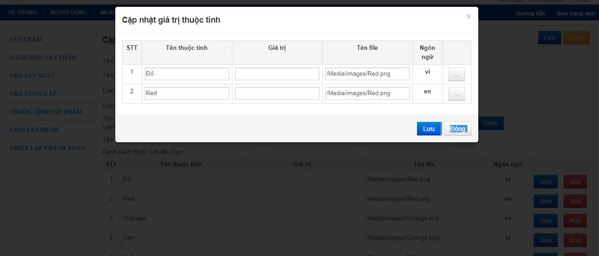

XV. Quản lý sản phẩm
1. Tạo sản phẩm
- Trong mà hình chính chọn Tiện ích -> Bán hàng -> Sản phẩm
- Trong màn hình Quản lý sản phẩm chọn menu bên trái -> Thêm sản phẩm
-
Trong màn hình Thêm mới sản phẩm thực hiện các công việc
- Chọn ngôn ngữ trước khi nhập thông tin sản phẩm
-
Nhập thông tin sản phẩm:
- Các trường đánh dấu * là bắt buộc điền: Tên sản phẩm, mã sản phẩm, danh mục sản phẩm, số lượng nhỏ nhất cho phép đặt hàng, số lượng lớn nhất cho phép đặt hàng.
- Tên sản phẩm: tên hiển thị bên ngoài
- Sản phẩm số (mã sản phẩm): mã sản phẩm là duy nhất, có thể nhập số, chữ hoặc cả 2
- Danh mục sản phẩm: chọn danh mục cho sản phẩm, mỗi sản phẩm phải thuộc một danh mục. Nếu trong danh sách danh mục hiện tại chưa có danh mục cần nhập sản phẩm vào thì phải nhập danh mục vào trước khi nhập sản phẩm
- Giá: đây là giá bán của sản phẩm
- Giá giảm: nếu sản phẩm có giảm giá thì ghi giá đã được giảm ở đây
- Giảm giá từ ngày , đến ngày: là khoản thời gian giảm giá của sản phẩm. Nếu quá hạn dù giá giảm có để thì cũng không hiển thị ra bên ngoài.
- Mô tả ngắn về sản phẩm: ở đây chỉ nhập những mô tả ngắn gọn để hiển thị trong phần đầu của thông tin sản phẩm
- Mô tả chi tiết sản phẩm: nội dung chi tiết của sản phẩm
- Sản phẩm cùng tên: là sản phẩm có cùng tên nhưng khác nhau về một số thông tin (giá tiền, …) hoặc thuộc tính (màu sắc, …).
- Mã sản phẩm trong kho: dùng để liên hệ với sản phầm trong kho thông qua mã sản phẩm
-
Hình sản phẩm
- Ta chỉ chọn hình ảnh sản phẩm sau khi đã lưu thông tin sản phẩm.
- Hình sản phẩm: chọn hình từ file máy tính của bạn rồi nhấp Upload. Nếu sản phẩm có nhiều hình thì ta có thể chọn hình mặc định của sản phẩm bằng cách check vào ô chọn làm mặc định (tương tự cho hình banner, hình chi tiết, …)
- Nếu đang ở ngọn ngữ khác ngôn ngữ tiếng Việt thì có thể lấy hình từ ngôn ngữ tiếng Việt bằng cách chọn nút ”Sao chép hình ảnh từ ngôn ngữ tiếng Vệt” (Chú ý chỉ thực hiện được khi đã lưu sản phẩm và thông tin hình ảnh được chọn sẽ lấy từ thông tin tiếng Việt).
- Thuộc tính sản phẩm: Chọn thuộc tính tương ứng với sản phẩm trong tab “Thuộc tính”.
- Bấm nút "Lưu" để lưu nội dung vừa tạo.
2. Sửa sản phẩm
Trong màn hình Quản lý sản phẩm chọn sản phẩm cần sửa, chọn nút Sửa để thay đổi thông tin sản phẩm giống như trường hợp thêm sản phẩm. Sau đó, chọn nút lưu để lưu kết quả thay đổi
3. Không hiển thị sản phẩm, xoá sản phẩm
Trong màn hình Quản lý sản phẩm, chọn sản phẩm cần thay đổi. Check vào ô Công bố hay Không công bố để hiển thị hay không hiển thị sản phẩm. Từ màn hình danh sách sản phẩm có thể chọ chọn nút xóa để xóa sản phẩm bạn muốn xóa.
4. Quản lý nhà sản xuất
- Danh sách nhà sản xuất: Menu Tiện ích -> Sản phẩm -> cột trái chọn nhà sản xuất - > Danh sách nhà sản xuất. Danh sách này hiển thị thông tin các nhà sản xuất của sản phẩm
-
Thêm nhà sản xuất: Menu Tiện ích -> Sản phẩm -> cột trái chọn nhà sản xuất -> Thêm nhà sản xuất.
- Nhập các thông tin cần thiết như thêm tên nhà sản xuất, thứ tự sắp xếp, có sử dụng hay không và ghi chú
- Sau khi nhập xong thông tin cần thiết thì chọn nút “Thêm” để thêm nhà sản xuất
- Sửa nhà sản xuất: Trong tranh danh sách nhà sản xuất chọn nhà sản xuất muốn sửa -> chọn chữ “Sửa”. Sửa nội dung giống như nhập nội dung thêm mới và chọn nút “Lưu” để lưu thông tin vừa sửa lại
- Xóa nhà sản xuất: Trong tranh danh sách nhà sản xuất chọn nhà sản xuất muốn xóa -> chọn chữ “xóa”
5. Quản lý nhà cung cấp
- Danh sách nhà sản xuất: Menu Tiện ích -> Sản phẩm -> cột trái chọn nhà sản xuất - > Danh sách nhà cung cấp. Danh sách này hiển thị thông tin các nhà cung cấp của sản phẩm.
-
Thêm nhà sản xuất: Menu Tiện ích -> Sản phẩm -> cột trái chọn nhà cung cấp -> Thêm nhà cung cấp
- Nhập các thông tin cần thiết như thêm tên nhà cung cấp, email, thứ tự sắp xếp, có sử dụng hay không và ghi chú
- Sau khi nhập xong thông tin cần thiết thì chọn nút “Thêm” để thêm nhà sản xuất

- Sửa nhà cung cấp: Trong tranh danh sách nhà cung cấp chọn nhà cung cấp muốn sửa -> chọn chữ “Sửa”. Sửa nội dung giống như nhập nội dung thêm mới và chọn nút “Lưu” để lưu thông tin vừa sửa lại.
- Xóa nhà cung cấp: Trong tranh danh sách nhà cung cấp chọn nhà cung cấp muốn xóa -> chọn chữ “xóa”.
6. Quản lý thuộc tính sản phẩm
- Danh sách nhóm thuộc tính: Menu Tiện ích -> Sản phẩm -> cột trái chọn Thuộc tính sản phẩm - > Danh sách thuộc tính sản phẩm. Đây là sách các nhóm thuộc tính của sản phẩm.
-
Danh sách nhóm thuộc tính: Menu Tiện ích -> Sản phẩm -> cột trái chọn Thuộc tính sản phẩm - > Danh sách thuộc tính sản phẩm. Đây là sách các nhóm thuộc tính của sản phẩm.
- Thêm thông tin của nhóm thuộc tính tên nhóm, loại sản phầm, loại thuộc tính và co cho phép tìm hay không.
- Có 2 loại thuộc tính là nhập dữ liệu và lự chọn nhiều
- Nhập thông tin thuộc tính như tên thuộc tính, giá trị và file. Sau khi nhập xong thì chọn nút “Thêm” để tạo thuộc tính. Sau khi thêm thì danh sách thuộc tính đã tạo sẽ nằm bên dưới phần nhập liệu
-
Để sửa thông tin thộc tính thì trong sách thuộc tính đã tạo chọn “Sửa”. Một khung nhập thông sẽ hiển thị. Sửa nội dung cần sửa và chọn nút “Lưu” trên khung nhập thông tin

- Để xóa thuộc tính thì trong danh sách thuộc tính chọn “Xóa”.
- Để xóa thuộc tính thì trong danh sách thuộc tính chọn “Xóa”.
- Sau khi đã hoàn tất nhập thông tin thì chọn nút “Lưu” trên màn hình để lưu thông tin lại.
- Sửa thuộc tính sản phẩm: Trong màn hình danh sách nhóm thuộc tính chọn nhóm cần sửa và chọn “Sửa”. Sau đó nhập thông tin cần sửa như thêm nhóm thuộc tính và chọn nút “Lưu” màn hình khi hoàn thành
- Xóa thộc tính sản phẩm: Trong màn hình danh sách nhóm thuộc tính chọn nhóm cần xóa và chọn “Xóa” (Lưu ý khi đã có sản phẩm có thông tin thuộc tính thì sẽ không xóa được).
7. Quản lý loại sản phẩm
- Danh sách loại sản phẩm: Menu Tiện ích -> Sản phẩm -> cột trái chọn Loại sản phẩm - > Danh sách loại sản phẩm. Danh sách này hiển thị thông tin các loại sản phẩm
- Thêm nhà sản phẩm: Menu Tiện ích -> Sản phẩm -> cột trái chọn nhà Loại sản phẩm -> Thêm loại sản phẩm. Nhập tên loại sản phẩm và chọn nút “Lưu”.
- Sửa loại sản phẩm: Trong tranh danh sách loại sản phẩm chọn loại sản phẩm muốn sửa -> chọn chữ “Sửa”. Sửa nội dung giống như nhập nội dung thêm mới và chọn nút “Lưu” để lưu thông tin vừa sửa lại
- Xóa Loại sản phẩm: Trong tranh danh sách loãi sản phẩm chọn loại sản phẩm muốn xóa -> chọn chữ “xóa”